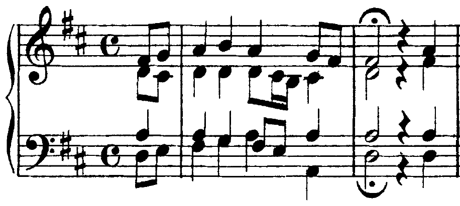
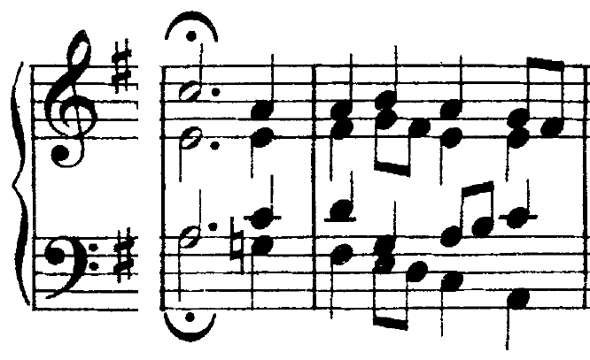
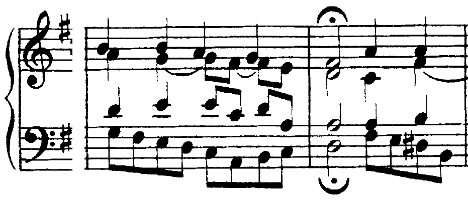
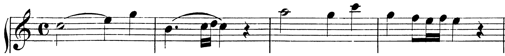

La sensibile, la quinta o la settima al basso: tre modi di far camminare il basso dentro la dominante, ciascuno con la sua risoluzione.
A differenza dello stato fondamentale, nei suoi tre rivolti la settima di dominante si trova sempre nella forma completa.
Carlo Marenco, Manuale d’armonia, p. 75
Lezione di due ore. Seconda ora: Intonazione: la settima di dominante e i suoi rivolti, arpeggiati. I compiti per casa sono alla fine.
C11La settima di dominante, pp. 302–303
Sezione C, unità 11, lezione 33: i rivolti si chiamano «quinta e sesta (primo rivolto), terza e quarta (secondo rivolto), seconda e quarta (terzo rivolto)» (p. 302).
Un rivolto della V⁷ ha al basso la terza, la quinta o la settima. Nei rivolti l’accordo è sempre completo e risolve sulla tonica completa (Marenco, p. 75). Primo rivolto: «la terza (al basso) sale alla tonica, la fondamentale rimane legata, la quinta ha movimento libero e la settima scende» (p. 75). Secondo rivolto: la quinta al basso «può salire di grado al I⁶ […] o scendere al I» (p. 76). Terzo rivolto: «la settima è al basso. Dovendo la dissonanza scendere di grado, la risoluzione avviene sempre su I⁶» (p. 77).
| rivolto | al basso (in re) | cifra | il basso nella risoluzione |
|---|---|---|---|
| primo | la terza, sensibile (do♯) | V⁶₅ | sale di semitono: I |
| secondo | la quinta (mi) | V⁴₃ | sale al I⁶ o scende al I |
| terzo | la settima (sol) | V⁴₂ (o V₂) | scende di grado: I⁶ |
Nel periodo in re maggiore il basso si muove quasi sempre per grado, e la dominante lo segue con il rivolto adatto. B. 1: re–do♯–re, V⁶₅ fra due tonici (il la del contralto resta, il sol del soprano scende). Bb. 2–3: re–mi–fa♯, I–V⁴₃–I⁶: la settima del soprano scende al fa♯ e raddoppia il basso, la terza del I⁶. Bb. 3–4: fa♯–sol–fa♯, I⁶–V⁴₂–I⁶: la settima è al basso e scende. Alla b. 5 la V⁷ completa dopo la 6/4; alla b. 6 il V⁴₃ scende al I (mi–re), alla b. 7 il V⁶₅ porta alla chiusa.
Trattare il V⁴₂ come un V qualunque e portare il basso alla fondamentale della tonica: il sol salta al re e la settima non si scioglie. Con la settima al basso, il basso scende di grado al fa♯: I⁶.
Il corale guida dell’unità comincia con un V⁴₃. Nel levare il basso sale re–mi e prosegue al fa♯: sul mi (secondo ottavo) l’accordo è mi–la–do♯–sol, con la settima al soprano; sulla b. 1 il I⁶. La settima sale (sol–la), a decime parallele con il basso mi–fa♯: è il caso, raro, in cui nel I–V⁴₃–I⁶ «the 7th of the V⁴₃ moves up», «probably to create the parallel 10ths» (Kostka, Tonal Harmony, p. 211). Sul terzo movimento della b. 1 il tenore scende sotto il basso; sull’ultimo arriva la V⁷ incompleta, che risolve sulla tonica completa.

Lo stesso corale ha un V⁴₂ nel levare della quarta frase. Alla b. 8 la frase si ferma sul V; sull’ultimo movimento il basso scende al sol sotto la–do♯–mi: V⁴₂. Il sol scende al fa♯ e la b. 9 comincia sul I⁶, come vuole la regola del terzo rivolto.

Nel corale BWV 154/8 il basso scende per crome in tutta la b. 7; sull’ultimo ottavo arriva il do♯, la sensibile, mentre il soprano tiene il sol, il contralto ha il mi, il tenore il la: V⁶₅. Alla b. 8 il do♯ sale al re, il sol scende al fa♯, il la del tenore resta: «la fondamentale rimane legata» (Marenco, p. 75).

Si ascoltano le bb. 7–8 seguendo il basso: la discesa in crome, poi il do♯–re. Al secondo ascolto si segue il soprano e si canta a mezza voce il sol–fa♯ della settima.
Sensibile al basso, che sale alla tonica. La fondamentale resta, la settima scende. Va al I.
Quinta al basso, fra I e I⁶ (o I⁶ e I). La settima scende; nel I–V⁴₃–I⁶ può salire, a decime con il basso.
Settima al basso, che scende di grado. Va sempre al I⁶.
Nei rivolti la V⁷ è sempre completa. Mercoledì, ora 33: la V⁷ e i rivolti cantati in arpeggio. La lezione si chiude con il solfeggio parlato, cantato e ritmico.
La settima di dominante e i suoi tre rivolti cantati in arpeggio, ciascuno dalla nota del basso, fino alla risoluzione.
Le più comuni dissonanze armoniche sono proprio la conseguenza della progressiva abitudine all’ascolto di passaggi melodici dissonanti molto comuni.
D. D’Urso, A. Odone, Il linguaggio della musica, p. 302
B5L’intervallo di settima sulla dominante, pp. 154–155 · C11Cantiamo la settima di dominante, p. 303
I modelli tonali con la V⁷ e le melodie da cantare leggendo. Il libro non canta i rivolti in arpeggio.
Nell’arpeggio della V⁷ dalla fondamentale gli intervalli sono una terza maggiore, una terza minore e una terza minore (sol–si–re–fa): fra gli estremi una settima minore, un tono sotto l’ottava. Dentro c’è il tritono si–fa. Una melodia che percorre queste note porta con sé l’armonia: «the V7 chord is outlined in this melody» (Kraft, A New Approach to Ear Training, p. 61). La risoluzione si canta: il si sale al do di semitono, il fa scende al mi di semitono.
Prima la scala di do e la triade; poi l’esempio cantato con il nome delle note, lento, con il basso al pianoforte; poi senza pianoforte, con il solo do iniziale. Alla fine si canta soltanto il basso, a metà classe, mentre l’altra metà canta la melodia.
Cantare la settima maggiore (fa♯) al posto della minore: la settima della V⁷ è un tono sotto l’ottava della fondamentale. E nella risoluzione, allargare il semitono fa–mi: il mi si pensa vicinissimo.
In ogni battuta della V⁷ l’arpeggio parte dalla nota che sta al basso, e la voce sente lo stato dell’accordo. V⁶₅ dal fa♯: terza minore, terza minore, seconda maggiore (fa♯–la–do–re). V⁴₂ dal do, la settima: seconda maggiore, terza maggiore, terza minore (do–re–fa♯–la), qui cantato dall’alto in basso, così che il do arriva per ultimo e scende al si. V⁴₃ dal la: terza minore, seconda maggiore, terza maggiore (la–do–re–fa♯). Ogni arpeggio sfocia nella nota di risoluzione: do–si, fa♯–sol.
Cantato lento, con il basso; poi a due gruppi: uno canta la melodia, l’altro tiene il basso. Alla b. 7 si ascolta il tritono fa♯–do, cantato in salita: si prende pensando il si, dove il do va a risolvere.
All’inizio della Sonata K 545 la mano sinistra arpeggia gli accordi in crome. Alla b. 2 suona re–sol–fa–sol: il re al basso, il fa (settima) dentro il disegno, mentre la destra tiene il si, la sensibile: V⁴₃. Sul terzo movimento il si sale al do, il fa scende al mi, il re al do. Alla b. 3 il IV⁶₄ di volta sopra il do tenuto (U4 L5). Alla b. 4 il basso è il si: V⁶₅, con la settima fa nella destra (sol–fa–mi–fa), che scende al mi sul terzo movimento mentre il si sale al do.

Si ascoltano le bb. 1–4 due volte. Poi si canta la mano sinistra delle bb. 2 e 4, lenta, con il nome delle note; alla terza volta si canta soltanto la prima croma di ogni gruppo (il basso: do–re–do, do–do, si–do).
Scrivi una melodia di otto battute in semiminime, fra il sol₂ e il do₄. 1. In ogni battuta l’arpeggio dell’accordo indicato, che comincia dalla nota del basso o finisce su di essa (8 minuti). 2. Fra una battuta e l’altra la settima scende di grado e la sensibile sale (4 minuti). 3. La lettura mentale, due volte (3 minuti).
Dalla fondamentale: terza maggiore, terza minore, terza minore. La settima è un tono sotto l’ottava.
Si canta dalla nota del basso: sensibile (6/5), quinta (4/3), settima (4/2). Lo stato si sente dalla prima nota.
Due semitoni in direzioni opposte: la sensibile sale, la settima scende. Il tritono si prende pensando la nota di arrivo.
Seconda ora della mattina: il basso numerato con la settima di dominante (U5 L4). La lezione si chiude con il solfeggio parlato, cantato e ritmico.
Compiti per la prossima volta
Sul basso dato scrivi una melodia di otto battute in semiminime, fra il si₂ e il mi₄. In ogni battuta l’arpeggio dell’accordo indicato, che comincia dalla nota del basso o finisce su di essa; fra una battuta e l’altra la settima scende di grado e la sensibile sale. Poi cantala.
Gli arpeggi della V⁷ di la maggiore: mi–sol♯–si–re. Dal basso: V⁶₅ dal sol♯, V⁴₃ dal si, V⁴₂ dal re.
Sul quaderno, a matita. La foto del lavoro finito va su Classroom. Nel Workbook: apri l’esercizio C2-U5-L3-01 ↗
Compiti per la prossima volta
n. 280 e n. 281 parlato · n. 282 e n. 283 cantato · n. 284 e n. 285 ritmico
Ogni pezzo a tempo, senza fermarti: il parlato a nomi, il cantato prendendo il primo suono dalla tastiera, il ritmico battendo la pulsazione.
Scrivi la melodia sul quaderno, in chiave di violino: otto battute in 4/4, do maggiore. Il primo suono è mi. Prima il riferimento, poi tutto due volte, ogni coppia di battute due volte, il collegamento 1–4, 3–6 e 5–8, e tutto per controllare.
Il riferimento: accordo di tonica e primo suono
Il dettato · otto battute
Le sezioni (riferimento, tutto, le coppie, il collegamento) si ascoltano una per una e si ripetono quanto serve; le fasi fanno la procedura della classe, con gli annunci e le pause, da qualunque punto.
Sul quaderno scrivi in testa la sigla C2-D-U05-L3. Si corregge all’inizio della prossima lezione.
Compiti per la prossima volta
Scrivi un contrappunto di seconda specie (due note contro una) sopra il canto fermo, in modo misolidio (finale sol): dieci battute. Comincia su una consonanza perfetta, alla cadenza la sensibile sale alla finale, niente quinte e ottave consecutive.
Sul quaderno, con la sigla C2-CP-U05-L3 in testa; la foto va su Classroom.
Scritto: Una melodia di otto battute con gli arpeggi della V⁷, in la maggiore (Workbook, esercizio C2-U5-L3-01), sul quaderno; la foto va su Classroom. Solfeggio dal quaderno di lettura: parlato n. 280, 281; cantato n. 282, 283; ritmico n. 284, 285 (a tempo, senza fermarsi). Dettato C2-D-U05-L3 dalla pagina della lezione (sezioni da ascoltare, o le fasi della procedura guidata), sul quaderno con la sigla. Contrappunto di seconda specie sul canto fermo (C2-CP-U05-L3).
In classe
A nomi, a tempo, con la mano che batte. Chi si ferma riparte dalla battuta dopo.
Apri il n. 276 nel quaderno di lettura ↗ chiave di violino · 4/4
In classe
Si prende il tono dalla tastiera, si canta insieme; poi a gruppi.
Apri il n. 277 nel quaderno di lettura ↗ chiave di violino · 4/4 · do maggiore
Apri il n. 278 nel quaderno di lettura ↗ chiave di violino · 2/4 · fa maggiore
In classe
Tutti insieme, battendo la pulsazione. Poi a file, due battute a testa.